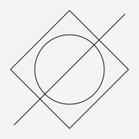

Layered.jl
Layered.jl is a library for creating layer-based 2D vector graphics.
Assemble first, then draw
Opposed to imperative packages like Luxor.jl or Cairo.jl (which Layered.jl is based on) you assemble a graphic out of layers and shapes before drawing it. This frees you from having to draw all shapes sequentially, from bottom to top.
using Layered
c, l = canvas(200, 200)
l + Stroke(nothing)
l1 = layer!(l)
l2 = layer!(l)
rect!(l2, O, 100, 100, deg(0)) + Fill("teal")
circle!(l1, O, 100) + Fill("tomato")
circle!(l2, O, 20) + Fill("yellow")
cTransforms and relative shapes
Layered.jl uses simple transforms for each layer. You can uniformly scale, translate and rotate, but not skew. This restriction is applied because it makes a circle stay a circle, no matter what layer it is in. Because you can create new shapes based on their relationships to existing shapes, like a tangent from a point in one layer to a circle in another, it's desirable that circles don't turn into ovals along the way. That could have unexpected geometric effects.
using Layered
c, l = canvas(200, 200)
layers = map([-45, 0, 50], -15:15:15, 0.8:0.2:1.2) do x, ang, scale
layer!(l, translation = X(x), rotation = deg(ang), scale = scale)
end
rs = map(layers) do l
rect!(l, O, 50, 50)
end .+ Fill.(["tomato", "teal", "bisque"])
ts = map(layers, ["one", "two", "three"]) do l, s
txt!(l, O, s, 14, :c, :c)
end
p = point!(l, Y(90)) + Fill("orange")
arrs = map(rs) do r
path!(l, r, p) do r, p
l = Line(p, topleft(r))
arrow(extend(l, -7, 0.5), 6, 2)
end
end .+ Fill("black") .+ Stroke(nothing)
cAttributes
Shapes have attributes such as linewidth, fill color, and line style. Unspecified attributes are inherited from parent layers, freeing you from copying common attributes all over your code.
using Layered
c, l = canvas(200, 200, color = Gray(0.95))
circ = circle!(l, O, 50)
rect!(l, O, 120, 120, deg(45))
line!(l, P(80, 80), P(-80, -80))
c
circ + Stroke("red")
l + Linewidth(4) + Stroke("blue")
c